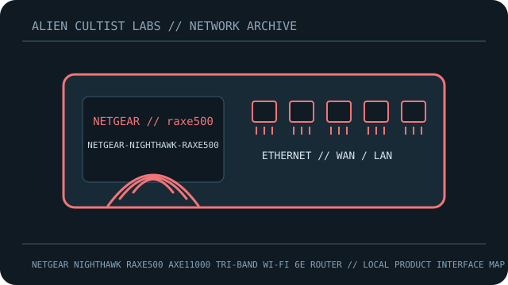

[ MODEL-SPECIFIC NETWORK HARDWARE RECORD ]
NETGEAR Nighthawk RAXE500 AXE11000 Tri-Band Wi-Fi 6E Router
Tri-band 12-stream Wi-Fi 6E router with 2.5GbE; match regional label before update.

IDENTIFICATION: Confirm exact model, revision, regulatory region and product label. Link rates are manufacturer maximum PHY/link specifications, not measured payload throughput; features depend on firmware and client capability.
Model-specific specifications and compatibility
| Subcategory | Network appliances: routers & access points |
|---|---|
| Exact product/model | NETGEAR Nighthawk RAXE500 AXE11000 Tri-Band Wi-Fi 6E Router |
| Ethernet ports and rates | 1x2.5GbE WAN/LAN, 1x1GbE WAN, 4x1GbE LAN; 2x USB 3.0. |
| Wi-Fi bands and standards | IEEE 802.11a/b/g/n/ac/ax Wi-Fi 6E: 2.4GHz 1.2Gb/s; 5GHz 4.8Gb/s; 6GHz 4.8Gb/s, 802.11ax/6E. |
| Streams and nominal-rate interpretation | 12 streams (4x4 each band); AXE11000 aggregate PHY class. |
| Antenna system | Eight internal high-performance antennas in fold-out housing. |
| Management, firmware and security updates | Nighthawk app/web; official support provides manuals, security notices and model firmware. Use RAXE500 image only; update options depend on release/configuration. |
| Power | 19V 3.16A (60W) external adapter; verify regional PSU label. |
| Compatibility | 2.5GbE configurable WAN/LAN; 6GHz needs compatible client/region; wired rate requires matching peer/cable. |
| Revision / variant | Exact RAXE500; not RAXE300/RAXE450/RAX120. Downloads are model-specific. |
Revision, management and deployment notes
Revision/variant: Exact RAXE500; not RAXE300/RAXE450/RAX120. Downloads are model-specific.
Firmware/security updates: Nighthawk app/web; official support provides manuals, security notices and model firmware. Use RAXE500 image only; update options depend on release/configuration.
Power: 19V 3.16A (60W) external adapter; verify regional PSU label.
Compatibility: 2.5GbE configurable WAN/LAN; 6GHz needs compatible client/region; wired rate requires matching peer/cable.
No throughput or range benchmark is claimed. For testing, record firmware, client, channel, topology and method.
Safety and preservation
Retain adapter/PoE labels and regional SKU, record firmware provenance and remove power before servicing. Do not publish credentials, serial numbers, MAC addresses or private network details.
Manufacturer sources and manuals
- NETGEAR RAXE500 product specificationsManufacturer specification source for the model.
- NETGEAR official user manual PDFOfficial manufacturer support, firmware, installation or manual resource.
Use exact model/revision and purchase-region documentation for firmware and regulatory decisions.